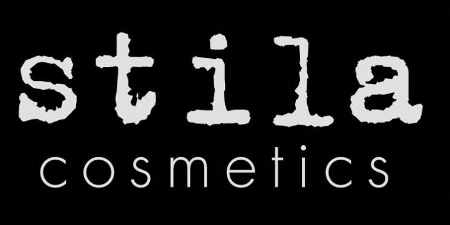

Share this video.
About
Featured artists include: Jason Appel, Amber Talarico, Cary Ayers, Eryn Kruger Mekash, Diana Schmidtke, Joel Harlow and Steve Johnson.
Throughout this documentary film, we showcase the many steps and stages artists go through to achieve success in this industry. Within the five segments we feature, we have chosen artists that currently reflect one of the stages. Amber gracefully exposes what these artists go through to make it to the top- everything from long hours, impossible expectations, low/no pay, and being under excessive amounts of pressure.
This film explores the many amazing opportunities if you know where your strengths are, what you want to do within the industry, and understand the sacrifice required in getting there.
What It Takes will explore the many opportunities available, from working in fashion via runway or editorial hair and makeup to onset professionals in film and television who use their talents to create believable characters through hair design, makeup, and special FX. Every effort by these professionals is essential to the success of the project they are supporting.
About the Director
Amber Talarico is a working freelance hair and makeup artist for film and fashion. Amber came up with the idea for the documentary as she navigated through the industry and explored so many different avenues other artists were taking. She experiences seeing successful artists give tips and tricks, behind the scenes photos, and the celebrity stylists hanging out with their high profile clientele. But what has never been visually exposed is just HOW hard the process is to get to those points in our careers-if you do in fact get there.
All of us on this journey, whether currently facing the challenges of the climb or having finally reached the pinnacle, can attest to the difficulty that is faced along the way.Amber wanted to show the grit of working in the film industry. Her journey throughout the film will give light to others interested in similar pursuits or ever wondered what some of the raw advice from industry leaders. Hair and makeup artists get a special glimpse into and create special bonds with their clientes.

Donate
We would love your support! We are starting our Indigogo campaign in May and would love your support. We couldn't do it without the support of our sponsors and people like you. Please help us get our documentary out there and share "What It Takes".
Sponsors


Throughout this documentary film, we showcase the many steps and stages artists go through to achieve success in this industry. Within the five segments we feature, we have chosen artists that currently reflect one of the stages. Amber gracefully exposes what these artists go through to make it to the top- everything from long hours, impossible expectations, low/no pay, and being under excessive amounts of pressure.
This film explores the many amazing opportunities if you know where your strengths are, what you want to do within the industry, and understand the sacrifice required in getting there. What It Takes will explore the many opportunities available, from working in fashion via runway or editorial hair and makeup to onset professionals in film and television who use their talents to create believable characters through hair design, makeup, and special FX. Every effort by these professionals is essential to the success of the project they are supporting.
About the Director
Amber Talarico is a working freelance hair and makeup artist for film and fashion. Amber came up with the idea for the documentary as she navigated through the industry and explored so many different avenues other artists were taking. She experiences seeing successful artists give tips and tricks, behind the scenes photos, and the celebrity stylists hanging out with their high profile clientele. But what has never been visually exposed is just HOW hard the process is to get to those points in our careers-if you do in fact get there.
All of us on this journey, whether currently facing the challenges of the climb or having finally reached the pinnacle, can attest to the difficulty that is faced along the way.Amber wanted to show the grit of working in the film industry. Her journey throughout the film will give light to others interested in similar pursuits or ever wondered what some of the raw advice from industry leaders. Hair and makeup artists get a special glimpse into and create special bonds with their clientes.
Donate
We would love your support! We are starting our Indigogo campaign in May and would love your support. We couldn't do it without the support of our sponsors and people like you. Please help us get our documentary out there and share "What It Takes".
Sponsors